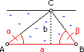

Trigonometrie - Aufgaben 1
1.
Wenn man a = 160 m vom Fußpunkt eines Turms entfernt ist, erscheint das Kreuz auf der b = 49 m hohen Turmspitze unter dem Sehwinkel α = 1,2°. Wie hoch ist das Kreuz?
2.
Ein geradeaus fahrendes Schiff peilt ein a = 21 km entferntes Leuchtfeuer unter dem Winkel α = 28° an (bezogen auf die Fahrtrichtung). Welchen Winkel ergibt eine zweite Peilung, nachdem das Schiff b = 2 km zurückgelegt hat?
3.
Von einem Fenster aus, a = 12 m über dem Boden, erblickt man die Spitze eines (in derselben Ebene gelegenen) Turms unter dem Höhenwinkel α = 6,3° und seinen Fußpunkt unter dem Tiefenwinkel β = 3,4°. Wie hoch ist der Turm?
4.
Eine 8 m große Statue steht auf einem Sockel. Statue und Sockel erscheinen einem a = 14 m entfernten Beobachter mit b = 1,6 m Augenhöhe unter dem Sehwinkel α = 39,6°. Wie hoch ist der Sockel?
5.

Entlang eines Flussufers wird eine Standlinie AB = 100 m gemessen. Ein Punkt C, der zwischen A und B am anderen Ufer liegt, wird von A aus unter α = 24° und von B aus unter β = 32° anvisiert. Wie breit ist der Fluss?
6.
Vom Fenster eines Leuchtturms aus sieht man ein Schiff unter dem Tiefenwinkel α = 10,3°. Von einem a = 3,5 m darunter liegenden Fenster sieht man dasselbe Schiff unter dem Tiefenwinkel β = 8,8°. Wie weit ist das Schiff vom Leuchtturm entfernt?
7.
Welchen Umfang hat der Breitenkreis durch einen Ort mit geographischer Breite α = 47,5°, wenn der Erdradius a = 6370 km ist. Hinweis: Der Schnitt der Erdoberfläche mit einer zur Drehachse normalen Ebene erzeugt einen Breitenkreis. Der größte davon ist der Äquator. Die geographische Breite eines Orts ist der Winkel, den der Radius zu diesem Ort mit der Äquatorebene einschließt.
Ergebnisse:
1. 3,69 m
2. 30,8°
3. 34,30 m
4. 2,72 m
5. 26,00 m
6. 130,00 m
7. 27040 km